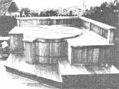

THE Mother Earth News (restricted) , P.O. BOX 70, Hendersonville, N.C. 28791
If you now operate, or have ever operated, a successful home business that was Inspired by an article you read in MOTHER, tell us (in about $00 words) when and where-and with how much "seed money"you started your venture. Because if your story can be fitted Into an upcoming installment of BOOTSTRAP BUSINESSES, you'll receive (11 the warm satisfaction of knowing that you helped someone else find the happiness you enjoy and (2) a free two-year new or renewal subscription to THE Mother Earth News (restricted) .
I was selling real estate In Los Angeles when I first saw a copy of THE Mother Earth News (restricted) . Well, I read that magazine from cover to cover, and before long I realized I was both in the wrong place and in the wrong line of work. Soon thereafter my wife and I packed up and moved to rural northern California, but I didn't know-at that time-what I was going to do to earn a living. Then along came another issue of MOTHER. An article on page 84 of No. 45 ("Food Self-Sufficiency Grand Prize Winners: The Dan Taylor Family of Parthenon, Arkansas") hit me just as hard as had the first issue I'd seen. t figured that if I really wanted to live in the country, I needed to team to take care of myself ...and that included working for myself.
So, being fairly handy and owning a few tools, I decided to try my hand at carpentry. My initial investment was $300 for redwood lumber ... with which I made picnic tables, benches, and mailboxes. I set up shop on the roadside, and sold my first batch of items in a hurry. Then one of my customers returned to ask me to build a redwood deck at his home! Well, that was my first big job ... and it earned me $500 In just a week and a half. Our new lifestyle was, I thought, off to a pretty good start.
I continued to market my wares along the roadside and to get offers of other work ...Including everything from carpentry to plumbing and electrical repair jobs. The woodcraft sales were profitable, but the personal referrals along with a handyman ad I placed in the local newspaper-got me busy in a hurry and actually made me a financially self-sufficient country man.
Since that initial $300 Investment, all of our expenses have been paid out of profits, and customers have rented any necessary tools I couldn't afford. I'm now earning around $1,200 a month ...and it could be a larger figure than that, but I prefer to allow myself a bit of free time to enjoy other activities (after ail, that's part of the reason I became a ruralite in the first place).
It has been almost four years since I read that article in MOTHER NO. 45. Since that time I've learned a lot about taking care of myself, and I've learned that there are always people out there who need some help in taking care of themselves ...and, through both cash and barter, such folks provide my livelihood.
And I'll tell you something else. If one day THE Mother Earth News" decides to have another self-sufficiency contest, my family is going to try hard to win it!
Jim Myers
Orangevale, Calif.
Our son Marc, like most students lacking that legendary silver spoon, went through a whole series of part-time jobs that were never fully satisfactory. His last "work for somebody else" experience convinced him that there just had to be a better way to make a little cash while still having time to do justice to both unsympathetic professors and his own social needs.
Fortunately, we had a complete collection of MOTHER's back Issues ...and Marc was able to combine a number of the ideas he found in those magazines in order to capitalize on the equipment and skills he had available and the local need. He used the ventures of Danny Huetter ("The Swagman", MOTHER NO. 16, page 112), Evan Green ("I Pick Up Profits With a Pickup", No. 32, page 24), Daniel Ellison ("Have Rototiller, Will Travel", No. 32, page 90), and John Halter ("Go Climb a Tree!", No. 57, page 90) to get his business going. He owned an old one-ton Chevy pickup (purchased a couple of years earlier for an extended camping adventure), and he'd acquired tree-climbing and - trimming experience on one of his part-time jobs. Yard work and tool-handling skills were second nature to him, too. So, his mom and 1 allowed him temporary use of the family rototiller, hand tools, and enough front money ($21.20) to place a three-week ad in the local Penny Saver.
That was all it took! Marc has had plenty of tree and yard work, rototilling jobs, and "dump runs" in the past 18 months (all he can handle while keeping up his grades and going to the beach or to the mountains occasionally). And since our son nets $6.25 an hour, he has been able to buy his own rototiller, chain saw, and an extensive selection of tools. He's also paying for his education and his keep. Best of all, though, since he can do all that and still find time and money to enjoy himself ...he's feeling great!
Robert T. Himmerich
Tustin, Calif.
Recently some friends and I became involved in an unusual bootstrap business. For the past 15 years my-and my family's-favorite hobby had been riding horses, but when my wife suggested we manage an actual horse sale (she'd read the Kayo Fraser letter, on page 158 of MOTHER NO. 87, about how that woman and her husband cashed in on their "horse sense"), I figured II would be a costly and complicated undertaking. Later, however, after looking into her idea a little, I began to see the matter from a whole new perspective.
I found-for instance-that horse sales are becoming the most popular method of buying the animals. Since the beasts are not nearly as common as they once were, a shopper might otherwise spend considerable time and money traveling around to find the right horse. A sale helps everyone ...by bringing together many horses of different quality and presenting them to a number of competing buyers.
We teamed that the manager's obligation is to provide a place for the sale and to advertise it to the general public. For this service, he or she is paid a consignment fee and receives a commission on all successfully sold animals. A survey of various sales showed that the consignment fees ranged from $10 to $100, and commissions seemed to be standard at 10%. We also teamed that it's best to demand that booking fees and registration papers be delivered at least one week In advance, in order to have time to prepare a catalog of the horses' names, ancestry, and owners.
Of course, we needed to locate a building large enough to hold a crowd and provide room for the exhibition of the horses, so we considered ourselves very lucky when the community park rented us a large agricultural building for only $50. A local volunteer tire department agreed to handle concessions, and a nearby veterinarian promised to check the horses out. By asking a few questions of the right people, we found a young auctioneer who was happy to conduct the sale for $100 ... and provide his own public address system, as well as his own assistant.
Three of my friends were "volunteered" to assist as callers in the ring, and one of my part oars was asked to work outside ...numbering the entries and keeping the horses moving. Several neighbors offered to help my wife handle the paper work and sales transactions.
The morning of the sale dawned beautiful and warm. Forty-one entrants, from five states, passed through our gate ... and over $8,400 worth of horses were sold. Our total net profit it was slightly over $1,100. Everyone seemed pleased with the first sale (including my wifewhose Idea it was in the first place-and me), and we've had a number of requests to do it again.
Here's a word of caution to prospective horse dealers, though: Advance arrangements should be made with your bank concerning notification of any bad checks. Payment for all horses sold should be made directly to the sale, and the seller should not be paid until after the buyer's check clears the bank. Finally, the purchasers should not be mailed their animals' pedigrees until all checks are cleared. You'll come out o! your horse sale a lot more comfortably if you tot low these few simple rules.
Kenneth Estes
Morristown, Tenn.
Roger Bossley's article "Fabulous Fungus Art" (it appeared on page 154 of MOTHER N0. 59) started me out in an enjoyable craft and a bootstrap business of my own. While on a family hiking trip, I noticed some of the same bracket fungus that Roger had used for his drawings. After picking, drying, and cleaning a supply of -these shelf-shaped mushrooms, 1 began etching their undersides ...with only $3.00, for a bottle of spray varnish, Invested in the hobby (since my other "tools"-a nail and a quill pen -were already on hand).
Well, I soon found that many of the folks who saw my small nature drawings wanted one, so I took the next step and had brochures printed up (at a cost of $40). A local florist started showing my etchings on consignment, and word of mouth proved to be a surprisingly good advertiser My decorated mushrooms sold almost as fast as I could finish them!
Spurred on by my success, I began participating in art fairs around the state ... and increased my earnings to as much as $100 a day. At the same time I added other natural materials to my stock, creating prints on paper handmade from leaves, reeds, and comhusks.
Now I've taken a real giant step. I've quit my job as a high school librarian in order to devote most of my time to making and selling craft projects. And while the monetary rewards aren't yet as great as they were at the school, the satisfaction of doing my own thing helps make up for the drop in salary. It you'd like to order some of my mushroom etchings, contact me for further information.
Rose Peterson
The Pumpkin Works
Dept. TMEN
315 Pralina Lane
Storm Lake, Iowa 50588
7121732-3794
|
 |
|
|